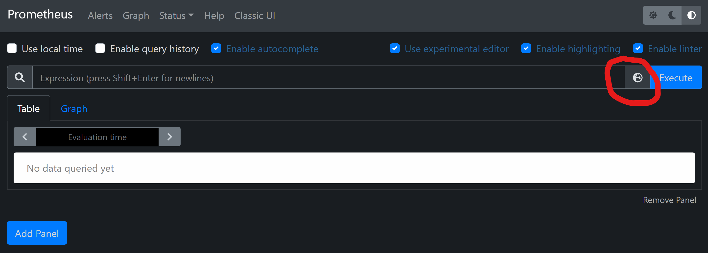

View Metrics in Prometheus
Before learning how to view metrics in Prometheus, let's take a close look at the example code in the Get Started#Metrics section.
using OpenTelemetryOpenTelemetry.jl is a meta package of several sub-packages. In practice, we'd import proper sub-packages based on the need. Here we simply import this meta package for tutorial purpose.
using TermIt is also recommended to import the Term.jl package for better rendering in REPL.
global_meter_provider(MeterProvider());The default global meter provider is a DummyMeterProvider(), which is just a placeholder and will do nothing. Try to remove this line and you won't see any metrics info printed in your console anymore.
Here we set the global meter provider to MeterProvider(). More configurations about MeterProvider will be explained later.
m = Meter("demo_metrics");Now, a Meter is defined with the name "demo_metrics". A Meter is used to group several instruments together to measure some similar aspects of a system. In an application, you may create many different meters as you wish.
Here the meter is implicitly associated with the global_meter_provider. Users are recommended to use Meter("demo_metrics"; provider=MeterProvider()) explicitly in practice.
c = Counter{Int}("fruit_counter", m)Then let's create an instrument of type Counter to count the number of fruits. A Counter, as the name indicates, is used to count the number of something. Each instrument must be associated with a Meter (the m here). Note that the parameter type Int indicates that we'll use an Int to represent the value. Although we have many other Number types in Julia, Int and Float64 are the common ones supported by most Application Performance Monitoring (APM) systems.
c(; name = "apple", color = "red")Each counter is a functional object. Now, let's say we've seen a red apple. We can call it directly without positional arguments, which implicitly means we've seen exactly ONE fruit. The two extra keyword arguments, name and color, define two dimensions of our fruit counter c. In theory, we can define a dedicated counter named "red_apple_counter". But adding extra dimensions will help us perform some aggregations on the resulted metrics. We'll discuss the advantage in detail later.
c(2; name = "lemon", color = "yellow")
c(1; name = "lemon", color = "yellow")
c(2; name = "apple", color = "green")
c(5; name = "apple", color = "red")
c(4; name = "lemon", color = "yellow")After adding more fruits. Now a question naturally arises, "How many fruits have we seen until now?" To answer this question, we need to create a MetricReader.
r = MetricReader();Here we omit two positional arguments. By default, the MetricReader will read metrics associated with the global_meter_provider() and export them to console.
As you may noticed, a bunch of information is printed in the console. What we're most interested in is the value field of each entry under the points field. Could you manually confirm they are exactly the same with the fruits we've seen?
Now let's add some more fruits.
c(10; name = "lychee", color = "red")
c(8; name = "longan", color = "yellow")
c(3; name = "apple", color = "red")To view all the fruits we've seen now, we can call the reader defined before, which is parameterless functional object.
r()Export Metrics to Prometheus
Although the information printed in the console is exhaustive, there're some better tools to help visualize the metrics intuitively. And this introduces the topic of the tutorial, to view metrics in Prometheus.
Generally, there are two approaches to export metrics into Prometheus, the push or pull based approach. The push based approach means every time we call r(), the metrics are send to a remote Prometheus service. While the pull based approach means our MetricReader sets up a service and wait for Prometheus to fetch metrics.
In OpenTelemetry.jl, only the pull-based approach is implemented for now.
prometheus_reader = MetricReader(PrometheusExporter());In the above code, we initialized a PrometheusExporter which listens to the endpoint of http://localhost:9496/metrics. Now open the link in your browser. You'll see metrics displayed as plain texts.
That's it!
You can further configure the endpoint either explicitly with keyword arguments or implicitly through environment variables (TODO: insert a link to supported environment variables page).
For example, to allow external prometheus services to fetch metrics, we can set the host to 0.0.0.0.
close(prometheus_reader) # close it first, or you can choose another port to avoid conflict.
prometheus_reader = MetricReader(PrometheusExporter(host="0.0.0.0"));The last step is to setup Prometheus and configure it to read the metrics we provided above. The official Prometheus website documents it well on how to install and configure the Prometheus client. Personally, I'd usually use docker for this kind of quick experiments. Make sure you have docker and docker-compose properly installed on your system. We'll use them throughout all the tutorials. Keep your existing Julia REPL open and we'll come back to it soon. Now open another terminal, follow the commands below to clone this repo and setup the Prometheus.
git clone git@github.com:oolong-dev/OpenTelemetry.jl.git
cd docs/src/tutorials/View_Metrics_in_Prometheus
docker compose upNow open your browser and head to http://localhost:9090. You'll see the following Prometheus portal.

Then click the icon near the Execute button to select the fruit_counter, and finally click the Execute button to execute the query. You'll see the metrics in the Table tab. Now switch to the Graph tab, you can see historical values of the fruit counter in each dimension. Come back to the Julia REPL. Try to add more fruits and see how the graph in the Prometheus portal changes.
Export Metrics to Prometheus through Pushgateway
In some cases, you may prefer the Pushgateway approach to export metrics. You can create a reader with PrometheusPushgatewayExporter.
prometheus_reader = MetricReader(PrometheusPushgatewayExporter(;resource_to_telemetry_conversion=true));Then each time we call prometheus_reader(), it will send the latest metrics to the default push gateway endpoint.
In the next tutorial, we'll learn more about OpenTelemetry and advanced metrics related usages.